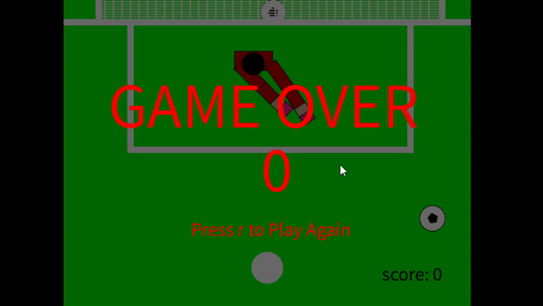

John Cullom - cullo006@umn.edu
Download Code Zip FileI created a soccer goalie simulation game where the user controls the "goalie" with wasd/arrow keys and their mouse. The arms of the goalie use inverse kinematics, with the "goal" position being the mouse. This gives the goalie realistic moving arms that are able to save soccer balls with the pink gloves/hands. I used processing's 2D librariesz to build the project.
For the added specialties, I created two arms, each with 4 joints, that were connected by the "body" of the goal keeper. I gave the different arm sections rotational speed limits and angle limits to mock accurate speeds of human arm movement with reflexes. I also added in user input/interraction and moving IK by allowing the user to move the roots of the IK arms with keys, control how fast the goalie moves with the shift key doubling the speed, and reset the game with the r key.
Game without angle limits
Game without rotational speed limits